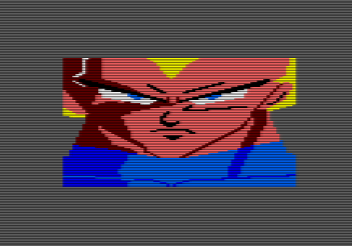
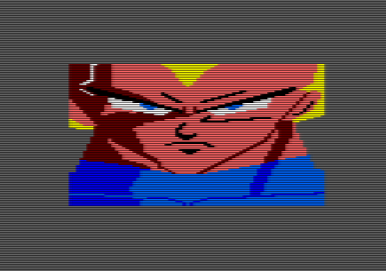
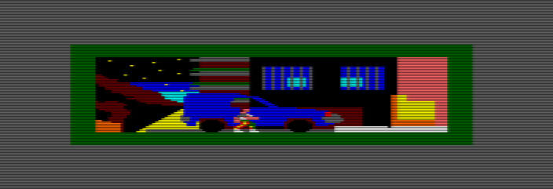
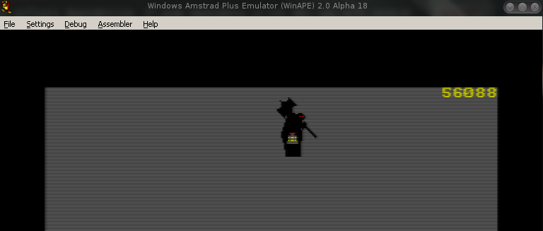

CPCtelera Reference Manual
Astonishing fast Amstrad CPC game engine for C and Assembler developers.
CPCtelera has been created by these Authors, and is distributed under GPL v3 License.
We give big thanks to all users, contributors and supporters, and all respects to our incredible Donors.
| CPCtelera Reference Manual | |
| Welcome to CPCtelera! | If you want to create games for Amstrad CPC, you are at the right place. |
| Donors | We are incredibly grateful to these people, who sent us some economic support to continue with CPCtelera and other CPC-related projects. |
| Supporting CPCtelera | We, as authors of CPCtelera, have started this journey to create a usable, free, convenient and up-to-date game engine. |
| Installing CPCtelera | CPCtelera works under Windows, Linux and OSX. |
| Downloading CPCtelera | You can download CPCtelera from these sources |
| Software Requirements | In order to install CPCtelera, your system will require previous software. |
| Installing CPCtelera in your system | These are the steps to install CPCtelera in your system |
| Starting with CPCtelera | Once setup.sh completes without errors, CPCtelera will be ready to use. |
| Advice for Assembly coders | Just a few comments for those wanting to program in Assembly with CPCtelera. |
| Screenshots | Let’s have a quick look at some things that CPCtelera can do. |
Welcome to CPCtelera!
If you want to create games for Amstrad CPC, you are at the right place. Welcome to CPCtelera!
CPCtelera is a low-level game library for C and assembler programmers wanting to create games on Amstrad CPC. You have an easy-to-use, very optimized library with a lot of ready-to-use basic functionalities
- Draw normal and masked sprites
- Draw solid colour boxes and speed up sprite trail erasing!
- Reproduce audio and sound effects
- Create fade-in / fade-out effects with your sound FX and music!
- Mix-up sound effects with music, using the 3 audio channels for both at the same time!
- Draw strings and characters using ROM characters without using firmware.
- Change the complete hardware palette and individual palette colours
- Draw very fast tiles aligned with character lines in the screen.
- Change default screen video memory location (do hardware double buffering!)
- Synchronize with VSYNC
- Change Video Modes (0, 1, 2 and undocumented mode 3!)
- Measure performance of your game loop (and know how many free CPU cycles you still have for doing more things in your routines!)
- Scan the keyboard for pressed keys with the fastest keyboard scanning routine available!
- Disable and re-enable firmware operation at will
- Enable and disable lower and higher ROM access
- Optimize array storage using bitarrays (arrays of 1-bit, 2-bit and 4-bit elements available!)
However, CPCtelera is much more than a low-level library. CPCtelera comes with a complete build system for easing your project creation and management. CPCtelera offers you
- Integrated set of compiling and generation tools (SDCC 3.4.3, iDSK 0.13, Hex2Bin 2.0, 2cdt)
- Easy and automated project creation and management
- Automatic generation of CDT and DSK files
- Program completely in C, completely in Assembler or mix both languages at will. You won’t even have to touch a line of the build system!
- Automatic generation of obj/ folder with all the intermediate object files (Never mess up your src/ directory!)
- Automatic generation of binaries, assembler output, symbol files and everything you need for debugging your program.
- Automatic identification of your project source files in C and ASM (.c and .s). Add new source files to your src/ directory and they will be automatically recognized an compiled!
- Automatic detection of src/ directory structure up to 1 level of subfolders without any modification!
Moreover, CPCtelera also comes with some authoring tools (in the folder cpctelera/tools/) for your game content as well as some command line tools for format conversions
- Create your musics with Arkos Tracker
- Create your sprites, tiles and maps with Retro Game Asset Studio 0.97! (And export them directly to CPCtelera C Array!)
- Convert any binary file to C Array and include it in your project with cpct_bin2c
- Convert a big sprite in a C Array into tiles of your desired size with cpct_sp2tiles!
- Convert old sprites in assembler CPCRSLib format into C Arrays with cpct_rgas2c!
And, of course, CPCtelera comes with a complete API documentation and lots of well documented examples for you to quickly and easily learn it!
All these features included in a single bundle for you to download and use, free and under GPL v3.0. License. You have all source code available for you to analyse, explore, improve and distribute!
Supporting CPCtelera
We, as authors of CPCtelera, have started this journey to create a usable, free, convenient and up-to-date game engine. There are lots of things to do and improve in order to achieve our goals. If you want to help us, we are more than happy. Any kind of help is always welcome, but we prefer any of these ways,
- Economic support: make a donation using Bitcoin or Paypal (Links are at the top of this file). Big thanks for your support!
- Documentation: create videos, images, tutorials, better explanations... And send us an email to cpctelera@cheesetea.com. We will be happy to receive your links! :)
- New library features: develop new functions and features and give us a Github pull request. Please, do read pieces of CPCtelera code previously and try to meet our quality standards.
- Beta Testing and reporting: report your findings testing CPCtelera at any new platform or in new ways. You may leave us a Github issue.
- New tools: creating new tools or adapting your tools to be included with CPCtelera is an awesome idea!
Any donation to our team will be used either in hardware / software to support this project, or as an aid for other Amstrad CPC related projects we manage (such us, for instance, #CPCRetroDev anual contest!)
Installing CPCtelera
CPCtelera works under Windows, Linux and OSX. It has been tested in Windows XP, 7 and 8, and in Ubuntu / Debian, Arch, Manjaro, Elementary OS and Raspbian Linux distributions. It works either on Intel architectures or on ARM’s.
| Downloading CPCtelera | You can download CPCtelera from these sources |
| Software Requirements | In order to install CPCtelera, your system will require previous software. |
| Installing CPCtelera in your system | These are the steps to install CPCtelera in your system |
Downloading CPCtelera
You can download CPCtelera from these sources
- Download current stable version 1.2.1
- Get Latest version from github:
git clone https://github.com/lronaldo/cpctelera
Software Requirements
In order to install CPCtelera, your system will require previous software. Check your system and install it before launching setup.sh.
Under Linux
Install these packages on your Linux distribution. Although they are pretty standard, names may slightly vary on some distributions.
- Commands: gcc, g++, make, bison, flex
- Libraries: libboost-dev, libfreeimage-dev
Under Windows
Under Windows Cygwin is required for CPCtelera to work. You may download Cygwin 32 / 64 and install it along with these packages (you may launch cygwin’s setup.exe at any time to install them),
- gcc-core, gcc-g++, make, bison, flex
- libboost-devel, libintl-devel
Under OSX
Under OSX XCode and Homebrew are required for installing CPCtelera. Follow these steps,
| 1. | Install XCode if you didn’t have it. |
| 2. | Install Homebrew if you didn’t have it. |
| 3. | Open a terminal and install XCode Command Line tools with this command, |
xcode-select --install
| 4. | Install libboost and freeimage from homebrew with these commands, |
brew install boost brew install freeimage
Some things to take into account on OSX,
- Some previous OSX systems may not understand the xcode-select --install command. On those systems, there usually are menu options from the XCode GUI to install Command Line Tools. If you need more advice, there is a nice explanation on stack overflow about the XCode Command Line Tools.
Installing CPCtelera in your system
These are the steps to install CPCtelera in your system
| 1. | Install required Software Requirements |
| 2. | Download and unzip current stable version 1.2.1 of CPCtelera (read “some considerations” below) |
| 3. | Open a terminal an enter cpctelera/ folder. |
cd cpctelera/
| 4. | Launch setup.sh |
./setup.sh
| 5. | Once setup.sh finishes, close your terminal and open a new one for changes to be set. |
CPCtelera is ready to be used in your system.
Some considerations
- It is recommended to unzip CPCtelera to a folder inside your user’s $HOME path (typically /home/username/ or C:\cygwin\home\username\).
- Once you run setup.sh, CPCtelera will be installed in the path you have previously unzipped it. If you move the folder to a new location, you should run setup.sh again.
- However, CPCTelera can be installed anywhere in your system, provided the path does not contain any spaces.
- setup.sh checks software dependencies. If some dependency is not met, you will receive an error message requesting you to install it and then launch setup.sh again.
Starting with CPCtelera
Once setup.sh completes without errors, CPCtelera will be ready to use. To have a quick glance about what CPCtelera offers, you may enter examples/ folder and check all the examples included. You can build any one of them just by typing make inside the example folder, then CDT and DSK files will be automatically generated.
For creating your own projects, CPCtelera includes the cpct_mkproject command line tool. setup.sh configures your system’s $PATH variable so that you have direct access to cpct_mkproject anywhere on your system (you should close and open your terminal again after setup.sh finishes). Creating a new project is as easy as typing this
cpct_mkproject [project_folder]
Once you have your own new project, you can enter its folder and you will have a Makefile and 2 important subfolders
- src/ is the folder containing source files. At the start it only contains a main.c file, but you can create new files and folders (1 level of sub-folders) in it. All .c and .s files below src/ will be automatically detected and compiled when you type in “make” at your project folder.
- cfg/ contains the building configuration of your project. In the file build_config.mk you will be able to make changes to the way the project is built. The 2 typical are changing the project name and its binary load address. Open the file and you will see 2 variables for this purpose. You can change them whenever you wanted.
The rest is up to you. Navigate this reference manual, grasp code from examples and start your own projects. All of us are waiting to see your new games! :D
Advice for Assembly coders
Just a few comments for those wanting to program in Assembly with CPCtelera. Most of the assemblers available out there use MAXAM assembly syntax, and most assembly code out there is coded this way. CPCtelera uses SDCC, which comes with ASZ80 integrated as assembler. ASZ80 has its own syntax and directives which are different to MAXAM’s. Take this into account when porting code to CPCtelera or when analyzing CPCtelera’s own code.
ASZ80 is developed by Alan R. Baldwin, and hast a good and detailed documentation for ASZ80 assembly syntax online. Check it to port your programs from MAXAM’s to CPCtelera.
CPCtelera lets you add assembly files to your projects by using the extension .s. Any .s file that you include in the src/ folder of your project (or any first-level subfolder) will be automatically detected and compiled by the default Makefile.
Screenshots
Let’s have a quick look at some things that CPCtelera can do.
This is the setup.sh script in action

The ROM “characters” example running

Two screenshots of the “fade” example running
 
The sprites example, showing CPCtelera’s Logo on CPC Mode 1

Masked sprites example, with a character moving over a background
An example on measuring performance, drawing and moving a sprite in Mode 1
Example showing animations in mode 0